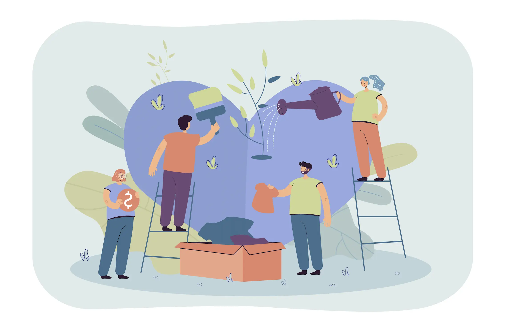
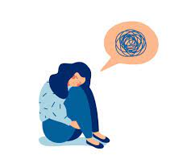
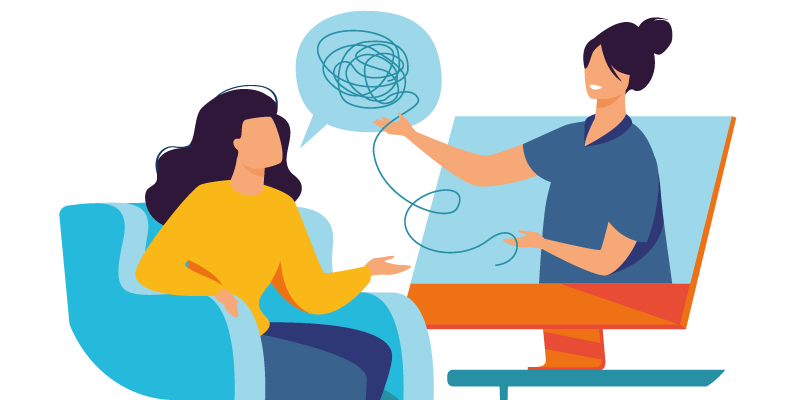
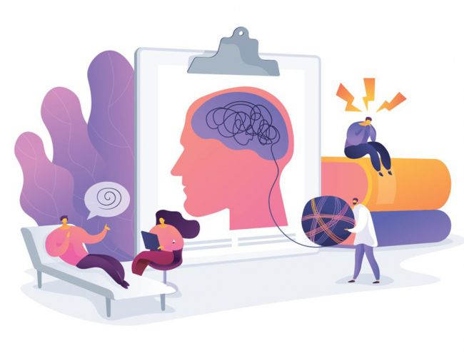

Допомога психолога онлайн
Психолог онлайн: коли це необхідно?
Раніше онлайн консультація психолога була чимось незвичним та викликала настороженість. Нині ця сфера психологічної практики змінилася кардинально. З глобалізацією та епідемією КОВІДу онлайн консультації психолога стали невід’ємною частиною життя сучасної людини. Якщо ви проживаєте в іншій країні та хочете звернутися до психолога, який говорить вашою рідною мовою; якщо ви працюєте віддалено й у вас немає можливості чи бажання витрачати час на дорогу; якщо ви маєте проблеми зі здоров’ям або епідеміологічна ситуація у вашому регіоні небезпечна, у всіх цих ситуаціях робота з психологом онлайн — це саме той вид допомоги, який вам ідеально підійде. Отже, як зрозуміти, що вам потрібна онлайн-консультація?
Психотерапія поспішає на допомогу
Психолог — це фахівець з гуманітарною освітою, який працює з локальним запитом. Він може не мати додаткової практичної освіти у межах будь-якої зі шкіл психотерапії та взаємодія з ним переважно має короткочасний характер.
Психотерапевт — це психолог, який навчений проводити психотерапевтичну роботу у межах якогось методу. Зазвичай психотерапія має під собою глибшу роботу, вона не буває “в рамках однієї консультації”. Яка спрямована на різноманітні емоційні порушення (ГТР, панічні атаки, ОКР, СРК, іпохондрія, депресивний стан, емоційне вигоряння та ін.). Для емігрантів подібними запитами можуть стати ще синдром емігранта, культурний шок або розлад адаптації.
Ще психотерапевтом може бути лікар, який має освіту в галузі психотерапії. У такому разі він має право виписувати медикаментозне лікування за потреби. Запам’ятайте, психотерапевт не повинен прописувати вам медикаменти, скасовувати призначення, зроблені лікарем, або ставити діагнози.
З якими труднощами звертаються до психолога на онлайн-консультацію?
Ось найчастіші запити, з якими звертаються до нашого центру:
- синдром емігранта;
- депресія, апатія, вигоряння;
- панічні атаки та агорафобія;
- тривога;
- стрес;
- розлад адаптації;
- перфекціонізм;
- низька самооцінка;
- тривога про здоров’я;
- проблеми у стосунках пари;
- дитячі та підліткові труднощі;
- проблеми батьків у стосунках з дітьми;
- адаптація дітей в іншій країні;
- адаптація дорослих до іншій країни;
- культурний шок та інші.
Як проходить онлайн консультація?
Ви узгоджуєте з адміністратором нашого психологічного центру зручний для вас час, а також вибираєте за допомогою якої платформи буде здійснюватися консультація. Наші фахівці зазвичай використовують для цього Вайбер (Viber Video) чи Гугл Міт (Google Meet). Ці платформи максимально зручні та дають досить добрий сигнал аудіо та відеозв’язку. Ми можемо використовувати й інші платформи, які будуть зручні для вас.
Після узгодження всіх деталей психолог та клієнт телефонують у заздалегідь обумовлений час й обговорюють запит клієнта. Оплата відбувається після проведеної сесії.
Насправді жодної особливої підготовки не потрібно. Ваше завдання — виділити час для сеансу та організувати свої справи так, щоб вас ніхто не відволікав та не турбував у цей час. А ще ми рекомендуємо закласти 10-15 хвилин до сеансу й після нього, щоб була можливість завершити подумки всі свої поточні справи або осмислити якісь ідеї, що виникли після зустрічі.
Також буде чудовою підготовкою, якщо ви накидаєте подумки відповіді на такі питання:
- Коли та чому ви вирішили звернутися до психолога?
- Чи маєте ви досвід взаємодії з іншими фахівцями?
- Якщо так, то який?
- Що вас турбує?
- Як давно це вас турбує?
- Що ви вже робили, щоб упоратися з проблемою?
- Ця підготовка є не обов’язковою, але корисна.
Як вибрати відповідного психолога?
Це не просте завдання. Пропозицій на ринку досить багато, а як визначити рівень професіоналізму спеціаліста не завжди зрозуміло. Ми рекомендуємо вам звертати увагу на такі параметри:
Вища освіта. Фахівцю необхідно мати вищу освіту гуманітарного вишу за спеціальністю “Психолог” або медичну освіту. Не соромтеся про це запитувати.
Практична освіта. Цей пункт обов’язковий, якщо ви хочете звернутися до психотерапевта (чим відрізняється психолог та психотерапевт ми розповімо нижче). У такому разі необхідно, щоб фахівець мав практичну освіту в рамках якоїсь школи (когнітивно-поведінкова терапія, гештальт-терапія, психоаналітична терапія та інші).
Досвід роботи та спеціалізація. Обов’язково уточнюйте, чи є у вибраного вами фахівця досвід роботи з проблемою, яка вас турбує. Наприклад, не всі психологи вміють працювати з панічними атаками чи синдромом емігранта.
Відгуки. Спробуйте пошукати відгуки інших клієнтів про роботу з обраним вами спеціалістом. Також корисними будуть статті психолога чи його відеоролики. Вони дозволять трохи “познайомитись” вам із психологом ще до особистої консультації. Зробити це можна у різний спосіб: вивчивши інформацію на сайті, подивившись на сторінки спеціаліста в соціальних мережах, пошукати інформацію про нього в базі психологів або на Youtube. Й навіть найпростіший спосіб — ввести в Google запит “психолог онлайн київ” або “психолог онлайн київ відгуки”. Це допоможе отримати додаткову інформацію.
Інтуїтивна думка. Цей пункт найскладніший, проте дуже важливий. Продуктивність роботи з психологом багато в чому залежить від того, наскільки ви зможете довіритися та відкритися йому. І якщо щось вас насторожуватиме або відштовхуватиме, не ігноруйте цей фактор.